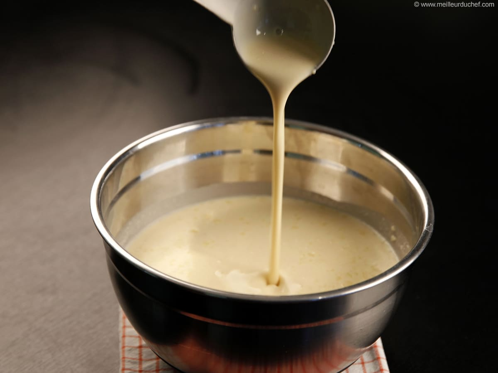

RECETTE DE PATE A CREPE
détails de la recette
- Temps de preparation : 10mn
- Difficulté : facile
- Prix : bon marché
Ingrédients
- 5 cl de rhum
- 50g de beurre fondu
- 2 cuillères à soupe d'huile
- 3 cuillères à soupe de sucre
- 300g de Farine
- 3 oeuf entiers
- 60cl de lait
Ustensiles
- Louche
- Fouet cuisine
- Cuillère en bois
- Poêle à crêpes
- Saladier
- Balance de cuisine
Etapes
- Mettre la farine dans une terrine et former un puits.
- Y déposer les oeufs entiers, le sucre, l'huile et le beurre.
- Mélanger délicatement avec un fouet en ajoutant au fur et à mesure le lait. La pâte ainsi obtenue doit avoir une consistance d'un liquide légèrement épais.
- Parfumer de rhum.
- Faire chauffer une poêle antiadhésive et la huiler très légèrement à l'aide d'un papier Essuie-tout. Y verser une louche de pâte, la répartir dans la poêle puis attendre qu'elle soit cuite d'un côté avant de la retourner. Cuire ainsi toutes les crêpes à feu doux.
